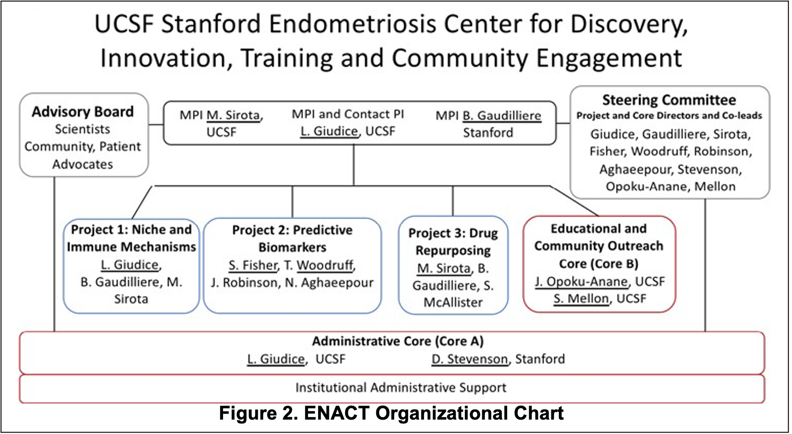

Study Summary
Endometriosis is a chronic, debilitating estrogen-dependent disease wherein tissue similar to the uterine lining (endometrium) is found mainly on pelvic tissues and organs where it causes an inflammatory response, scarring, pelvic pain, and infertility. It affects millions of reproductive age women and severely impacts quality of life and professional life, and has a huge health economic impact of about $69B annually in the U.S. While its etiology is uncertain, profound dysfunction of the innate and adaptive immune systems is associated with inefficient lesion clearance and pelvic and systemic inflammation.
The heterogeneity of endometriosis lesions and disease phenotypes is reflected in variable pain symptom presentations, unpredictable fertility potential, uncertain disease pathophysiology, and unpredictable responses to medical therapies, symptom and disease recurrence after surgical resection, and risks for co-morbidities. Clinical classifications of endometriosis are maladapted to the heterogeneity of disease expression, and thus efficient treatments for associated pain symptoms are lacking.
Herein, our UCSF Stanford Endometriosis Center for Discovery, Innovation, Training and Community Engagement (“ENACT”) proposes a comprehensive systems biology and precision medicine approach to endometriosis. We propose to study endometriosis unmet needs and challenges through transdisciplinary collaboration and scientific and technologic innovations, integrating multi-omics data to dissect endometriosis disease mechanisms, identify phenotypic and environmental disease signatures, develop accurate disease stratification and diagnosis, and identify novel and repurposed drug classes to ameliorate pain symptoms.To achieve these goals, our Center is comprised of 3 independent and interactive projects and 2 Cores, focused on the central theme of Endometriosis Precision Medicine.
- Project 1 Leveraging Single-Cell Technologies to Elucidate Niche Environments and Immune Mechanisms Involved in Endometriosis Pathogenesis, Pathophysiology, and Disease Stratification. Project 1 will focus on underlying immunological mechanisms in endometriosis pathogenesis and pathophysiology.
- Project 2 Mass Spectrometry-based Global Molecular Approaches and Computational Tools to Determine Phenotypic and Environmental Signatures of Endometriosis. Project 2 will address developing a multi-omic disease classification that will inform diagnostic strategies.
- Project 3 Integrating Omics Based Computational Approaches to Identify and Validate Novel Therapeutic Candidates for Endometriosis. Project 3 will leverage existing and newly generated large-scale omic data to identify and validate new therapeutic interventions.
- The Administrative Core will assure achievement of the goals of the Center and financial accountability and research compliance for all Projects and Cores across both institutions.
- The Education and Community Outreach Core's goals are to train and mentor new investigators in endometriosis research and to empower women with endometriosis to understand their symptoms and options for care and to inform the research community, from the patient’s perspective, about their needs and goals.
More information about our study, "UCSF Stanford Endometriosis Center for Discovery, Innovation, Training and Community Engagement." (Project Number: 1P01HD106414-01)
